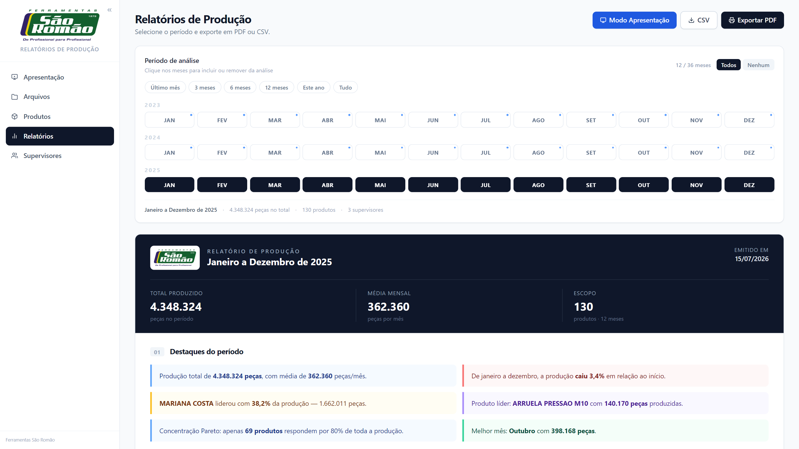
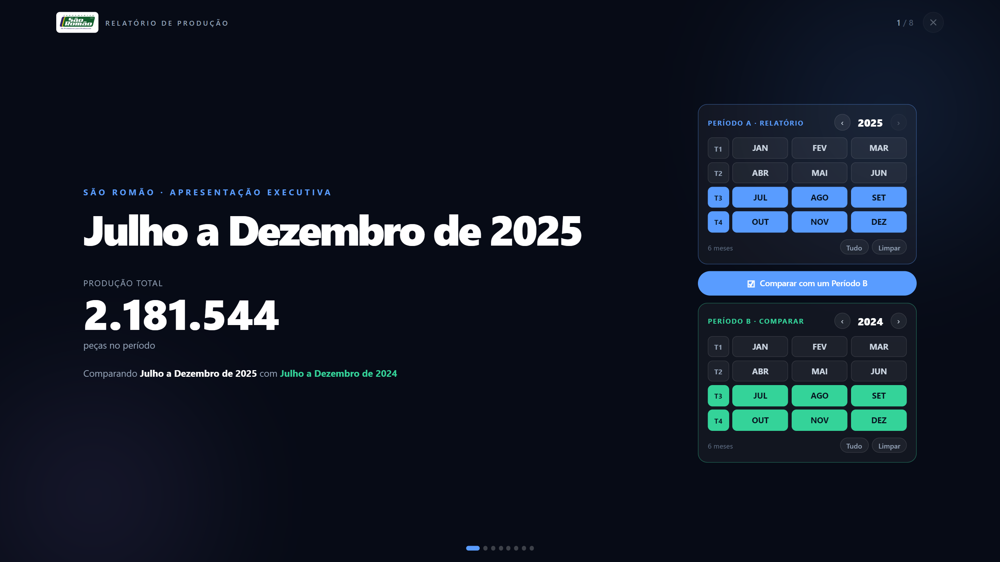
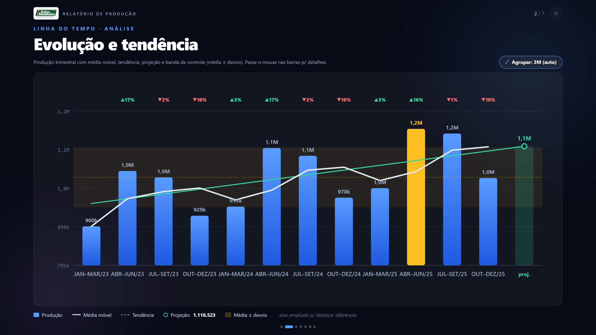
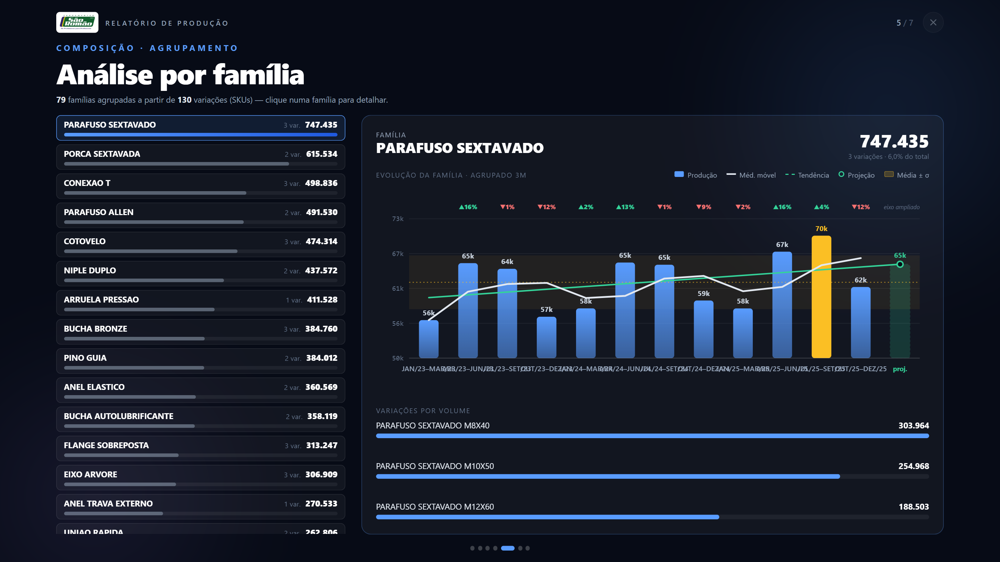
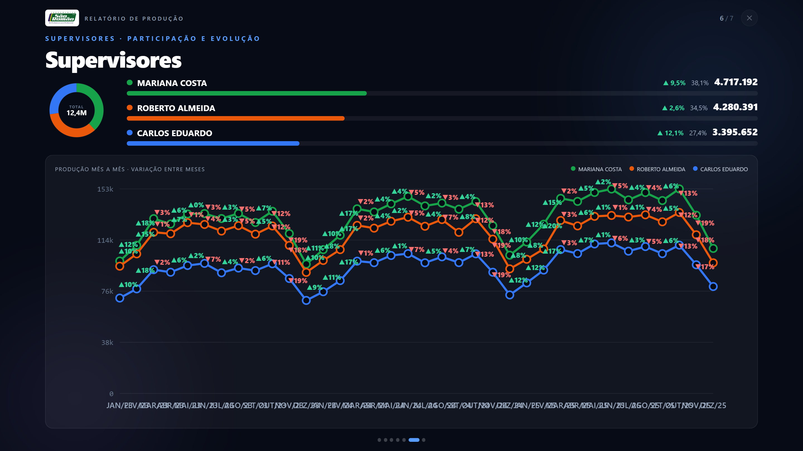
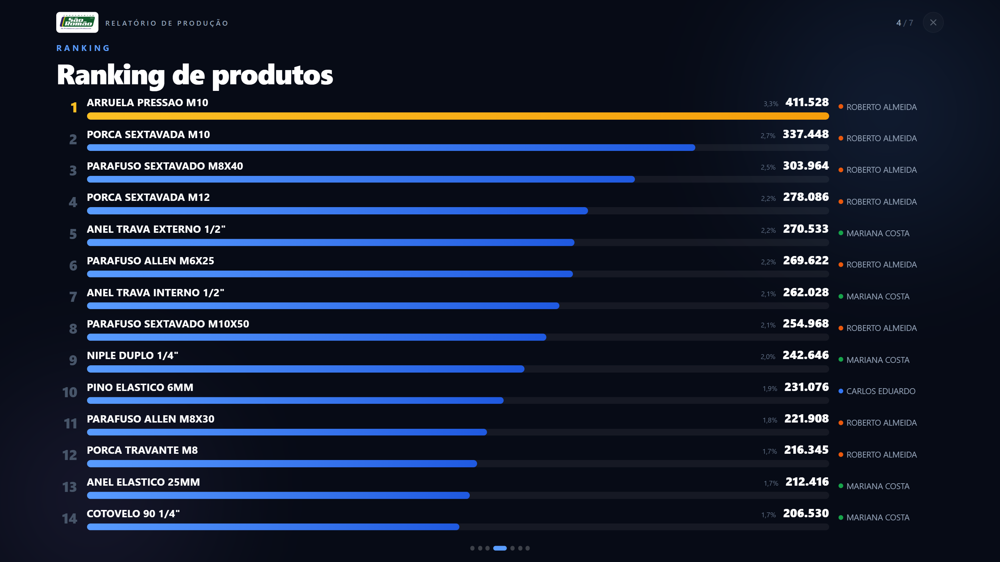

Relatórios de Produção — São Romão Production Reports — São Romão
Solução real, 100% offline, para a Indústria de Forjados São Romão: transforma relatórios de produção em PDF em análises por supervisor, produto e período — com um modo apresentação. A real, 100% offline solution for Indústria de Forjados São Romão: turns production reports in PDF into analytics by supervisor, product and period — with a presentation mode.
Roda 100% offlineRuns 100% offline
Tudo num servidor Node local, dentro da fábrica: sem internet, sem nuvem, sem SaaS e sem banco de dados. Os dados nunca saem da máquina — a única fonte é uma pasta de PDFs no disco. Everything on a local Node server, inside the factory: no internet, no cloud, no SaaS and no database. Data never leaves the machine — the single source is a folder of PDFs on disk.
O Problema — o documento de entrada The Problem — the input document
A Indústria de Forjados São Romão (Dom Silvério/MG), fabricante de ferramentas forjadas, gerava seus relatórios de produção em PDF (modelo "Mapa de Produção por Data"). O que chegava ao gestor todo mês era um despejo monocromático de texto: três colunas secas — código, produto, produção — repetidas por 132 itens ao longo de 4 páginas. Sem um total sequer, sem gráfico, sem análise. Um documento feito para imprimir, não para entender.
The Indústria de Forjados São Romão (Dom Silvério/MG), a forged-tools manufacturer, produced its production reports as PDFs ("Production Map by Date" template). What reached the manager every month was a monochrome text dump: three dry columns — code, product, output — repeated across 132 items over 4 pages. Not a single total, no chart, no analysis. A document made to print, not to understand.
Para apresentar ou entender qualquer coisa a partir disso, o gestor tinha que:
To present or understand anything from it, the manager had to:
- Somar e cruzar tudo na mão (ou digitar no Excel) — lento e sujeito a erro a cada fechamento. Sum and cross-reference everything by hand (or retype into Excel) — slow and error-prone every month.
- Descobrir quem produziu o quê: o PDF não tem supervisor nenhum, só códigos de produto. Figure out who produced what: the PDF has no supervisor at all, only product codes.
- Comparar meses e enxergar tendência abrindo vários PDFs lado a lado, manualmente. Compare months and spot trends by opening several PDFs side by side, manually.
- E fazer tudo isso sem internet: a fábrica opera offline, então nada de nuvem ou SaaS. And do all of it with no internet: the factory runs offline, so no cloud or SaaS.
A Solução The Solution
Um app que usa uma pasta de PDFs como fonte de dados: ao abrir, o servidor lê a pasta, faz o parsing de cada PDF (Node + pdf.js) e entrega tudo pronto para a interface. Sem banco de dados, sem nuvem — só arquivos locais.
An app that uses a folder of PDFs as its data source: on launch, the server reads the folder, parses each PDF (Node + pdf.js) and serves everything ready to the interface. No database, no cloud — just local files.
- Leitura sem margem de erro: Error-free reading: Cada PDF passa por conferências automáticas, incluindo um checksum do total (a soma dos produtos precisa bater com o "total produzido no período" impresso no rodapé) — prova matemática de que o parsing está correto. Each PDF goes through automatic checks, including a total checksum (the sum of products must match the "total produced in the period" printed in the footer) — mathematical proof that parsing is correct.
- Mapa produto → supervisor: Product → supervisor map: Cada produto é associado a um supervisor, com a configuração salva em arquivo no disco (não em localStorage) — não se perde ao trocar de navegador. Each product is tied to a supervisor, with the configuration saved to a file on disk (not localStorage) — it survives switching browsers.
- Análises consolidadas: Consolidated analytics: Relatórios por supervisor, por produto e consolidado de vários meses, a partir dos PDFs presentes na pasta. Reports by supervisor, by product and consolidated across several months, from the PDFs present in the folder.
- Modo apresentação: Presentation mode: Uma visão pensada para o gerente apresentar os números em reunião, direto do app. A view designed for the manager to present the numbers in meetings, straight from the app.
- Gestão de arquivos: File management: Enviar, baixar e remover PDFs pela própria interface — mas a pasta continua sendo a única "verdade". Upload, download and remove PDFs from the interface itself — yet the folder remains the single source of truth.

Antes → Depois Before → After
O mesmo dado, dois mundos. À esquerda, o PDF cru que chegava ao gestor; à direita, a mesma informação virando uma apresentação executiva pronta para a reunião.
Same data, two worlds. On the left, the raw PDF the manager received; on the right, the same information turned into a boardroom-ready executive presentation.

Modo Apresentação Presentation Mode
Um deck executivo em tela cheia, gerado automaticamente a partir dos PDFs. Média móvel, tendência, projeção, diagnóstico analítico e participação por supervisor — tudo pronto para projetar na reunião.
A full-screen executive deck, generated automatically from the PDFs. Moving average, trend, forecast, analytical diagnosis and per-supervisor share — all ready to project in the meeting.




Destaques Highlights
Stack
Next.js rodando como servidor Node local, com o parsing de PDF acontecendo no servidor (fora do bundle do webpack) para garantir precisão e performance.
Next.js running as a local Node server, with PDF parsing happening on the server (outside the webpack bundle) to ensure accuracy and performance.